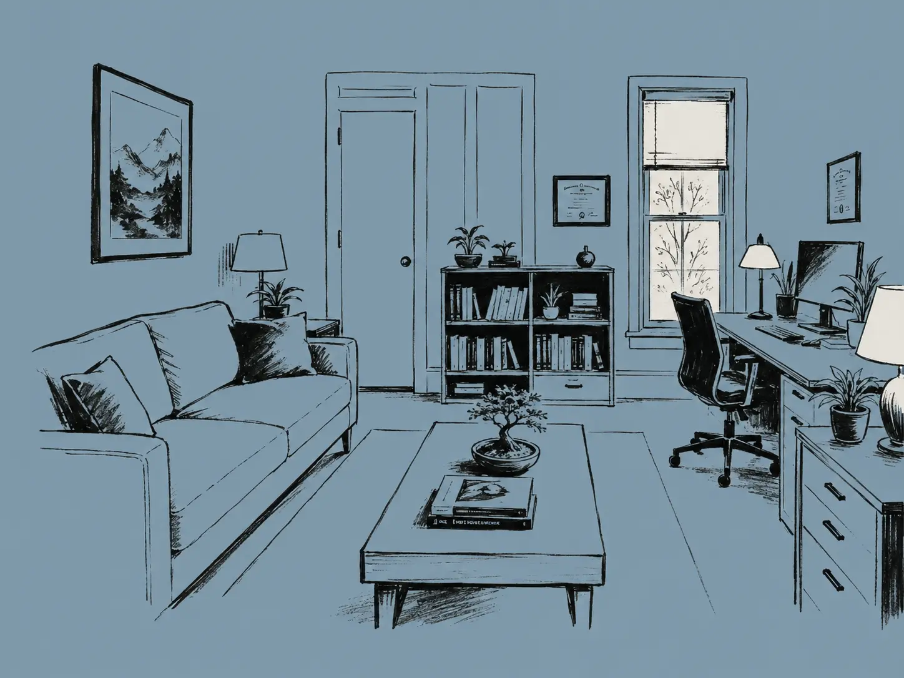

I specialize in adult ADHD and executive functioning. I provide a safe, confidential space to talk through what's on your mind and work through the backlog, the overwhelm and the stuckness.
I believe you have a strong desire to grow and succeed within you. You've tried different strategies, you've made some progress, but the stress and struggle usually come back. I will be your collaborator and help you develop your own strategies and systems, while blending in my expertise in psychology and adult ADHD.
In-person therapy in Amherst, Massachusetts · Secure telehealth anywhere in Massachusetts · For clients located in Massachusetts
My style is warm, collaborative, conversational, and goal-oriented. I integrate person-centered therapy, Cognitive-Behavioral Therapy (CBT) and mindfulness to build key skills for change — to help you be the best version of yourself.
The practical side: evidence-based tools designed to help you improve your focus, energy, mood, and attention. The emotional side — ADHD shame, ADHD grief, the inner critic, managing your self-talk.

Licensed psychologist in Massachusetts. Sessions in person in Amherst, MA, or by secure telehealth anywhere in the state.
Current fees, insurance, and payment details are listed on my Psychology Today profile. Free 15-minute intro consultation.
Therapy is clinical care: it can address diagnosis, mental health conditions, and the emotional weight ADHD carries, within a confidential clinical relationship. Coaching is practical and forward-looking: systems, follow-through, getting unstuck on specific work. Some people are a fit for one, some for the other. If you're not sure, reach out and I'll help you figure it out — no pressure either way.
If you are in crisis or experiencing a mental health emergency, please call or text 988 (in the US) or go to your nearest emergency room. This website does not provide emergency services.